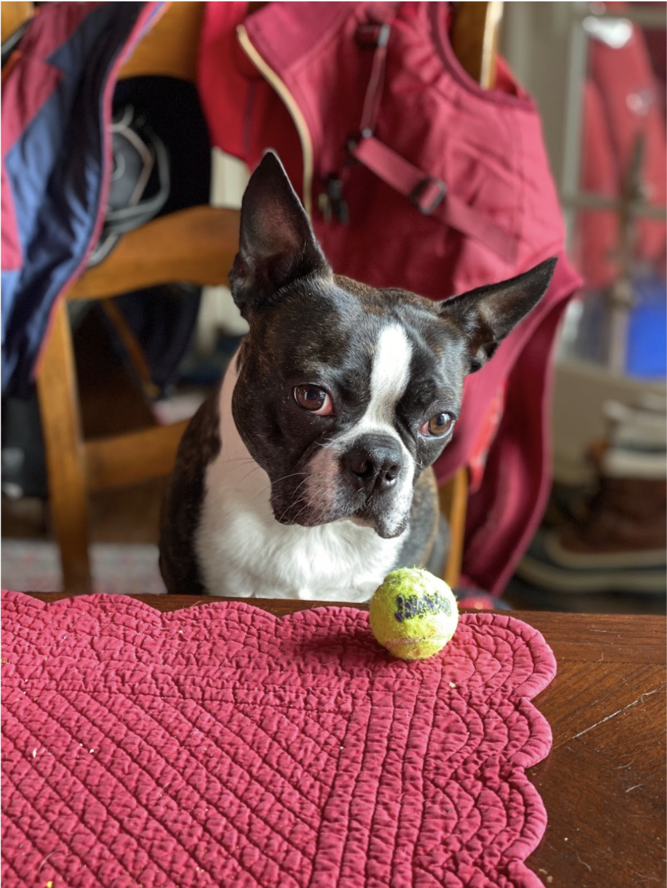
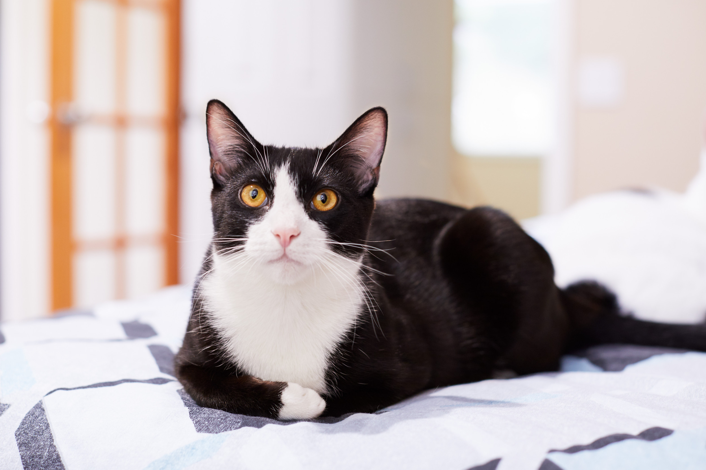
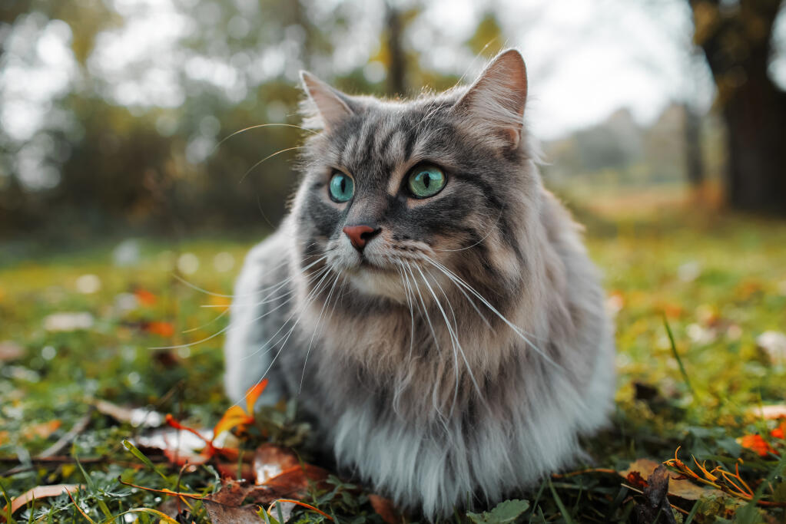

Light Mode
Dark Mode
Bacon Q Dog

Bacon Q. Dog is a 9yr old labradoodle. He prefers to spend his days lounging among the three different beds/couches that his family has gifted him. He enjoys a walk or two around the neighborhood, as long as he can pretend that he doesn't see any of the other animals to avoid the embarrassment of not wanting to admit he has no wolf-like skills in chasing them.
At night just as the rest of the family is ready to relax, Bacon suddenly wants to release all of his energy. He will place his toys on a mini couch and frantically drag the couch around, giving his toys "a ride." There is also a lot of rolling. Lots and lots of rolling.
Photo Gallery


Likes
- Belly rubs
- Playing tug-of-war
- Sneaking onto the couch
Fitz
Loves chasings tennis balls, chipmunks, squirrels, and birds. Often found sitting by the fire in wintertime, and in sun patches when available. He’s energetic, mischievous, and easily bored. He loves people and gets grumpy if left without a lap too long.
Loves barking up trees, running around on the lawn, and digging in the dirt looking for moles. He especially likes getting treats and whines when he comes inside and doesn’t get a snack.
Photo Gallery


Likes
- Belly rubs
- Playing tug-of-war
- Sneaking onto the couch
Ziggy Stardust
Ziggy Stardust is a 3 year old cat. He is a black and white tuxedo cat. He is very friendly and loves to cuddle. He is very playful and loves to play with his toys. He is very curious and loves to explore. He loves to play with his brother
Photo Gallery


Likes
- Playing with his toys
- Playing with his brother
- Playing with his sister
Chewy
Chewy is a 5 year old dog who resembles scooby doo from the popular kids cartoon! He loves to go for walks, and enjoys running around in parks!
Photo Gallery
Likes
- Going for walks
- Running around in parks
- Playing with his toys
Sun Jay
Sun Jay is a 1-year old cat who relishes in his playful energy and growing autonomy. This charming feline adores chasing after toys and exploring his surroundings, yet he also savors quiet moments of cozy snuggles and purring contentedly. His curious eyes and gentle demeanor make him an endearing pet to all.
Photo Gallery
Likes
- Playing with his toys
- Exploring his surroundings
- Snuggling with his owners